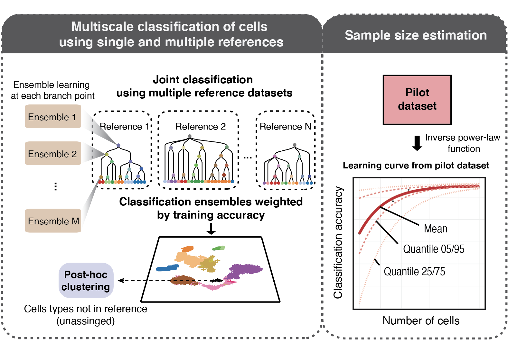
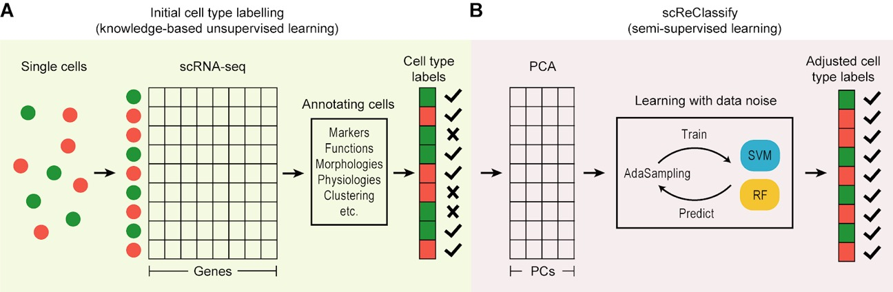
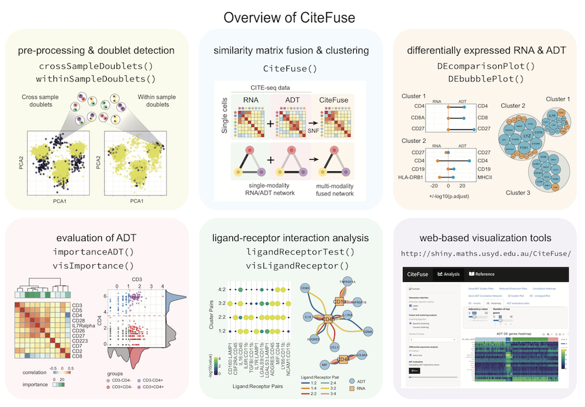

scdney packages
package.Rmd scdney include the packages for
single-cell data analysis for data integration (scMerge), cell type
identification (scClust, scClassify, scReClassify),
multi-modal data analysis (CiteFuse), higher
order testing (scHOT),
differential stable genes analysis (Cepo) and differential
composition analysis (scDC).
Data integration
scMerge

- Github: https://github.com/SydneyBioX/scMerge
- Reference: Lin, Y., Ghazanfar, S., Wang, K.Y., Gagnon-Bartsch, J.A., Lo, K.K., Su, X., Han, Z.G., Ormerod, J.T., Speed, T.P., Yang, P. and Yang, J.Y.H. (2019) scMerge leverages factor analysis, stable expression, and pseudoreplication to merge multiple single-cell RNA-seq datasets. Proceedings of the National Academy of Sciences.
Cell type identification
scClassify
 Automated cell type identification is a key computational challenge in single‐cell RNA‐sequencing (scRNA‐seq) data. To capitalise on the large collection of well‐annotated scRNA‐seq datasets, we developed scClassify, a multiscale classification framework based on ensemble learning and cell type hierarchies constructed from single or multiple annotated datasets as references. scClassify enables the estimation of sample size required for accurate classification of cell types in a cell type hierarchy and allows joint classification of cells when multiple references are available. We show that scClassify consistently performs better than other supervised cell type classification methods across 114 pairs of reference and testing data, representing a diverse combination of sizes, technologies and levels of complexity, and further demonstrate the unique components of scClassify through simulations and compendia of experimental datasets. Finally, we demonstrate the scalability of scClassify on large single‐cell atlases and highlight a novel application of identifying subpopulations of cells from the Tabula Muris data that were unidentified in the original publication. Together, scClassify represents state‐of‐the‐art methodology in automated cell type identification from scRNA‐seq data.
- Github: https://github.com/SydneyBioX/scClassify
- Reference: Lin, Y., Cao, Y., Kim, H.J., Salim, A., Speed, T., Lin, D.M., Yang, P. and Yang, J.Y.H. (2020) scClassify: sample size estimation and multiscale classification of cells using single and multiple reference. Molecular Systems Biology.
scReClassify
 Single-cell RNA-sequencing (scRNA-seq) is a fast emerging technology allowing global transcriptome profiling on the single cell level. Cell type identification from scRNA-seq data is a critical task in a variety of research such as developmental biology, cell reprogramming, and cancers. Typically, cell type identification relies on human inspection using a combination of prior biological knowledge (e.g. marker genes and morphology) and computational techniques (e.g. PCA and clustering). Due to the incompleteness of our current knowledge and the subjectivity involved in this process, a small amount of cells may be subject to mislabelling. Here, we propose a semi-supervised learning framework, named scReClassify, for ‘post hoc’ cell type identification from scRNA-seq datasets. Starting from an initial cell type annotation with potentially mislabelled cells, scReClassify first performs dimension reduction using PCA and next applies a semi-supervised learning method to learn and subsequently reclassify cells that are likely mislabelled initially to the most probable cell types. By using both simulated and real-world experimental datasets that profiled various tissues and biological systems, we demonstrate that scReClassify is able to accurately identify and reclassify misclassified cells to their correct cell types. scReClassify can be used for scRNA-seq data as a post hoc cell type classification tool to fine-tune cell type annotations generated by any cell type classification procedure.
- Github: https://github.com/SydneyBioX/scReClassify
- Reference: Kim, T., Lo, K., Geddes, T., Kim, H.J., Yang, J.Y.H. & Yang, P. (2019) scReClassify: post hoc cell type classification of single-cell RNA-seq data. BMC Genomics.
scClust
 Advances in high-throughput sequencing on single-cell gene expressions
have enabled transcriptome profiling on individual cells from complex
samples. A common goal in scRNA-seq data analysis is to discover and
characterise cell types, typically through clustering methods. The
quality of the clustering therefore plays a critical role in biological
discovery. While numerous clustering algorithms have been proposed for
scRNA-seq data, fundamentally they all rely on a similarity metric for
categorising individual cells. Although several studies have compared
the performance of various clustering algorithms for scRNA-seq data,
currently there is no benchmark of different similarity metrics and
their influence on scRNA-seq data clustering. Here, we compared a panel
of similarity metrics on clustering a collection of annotated scRNA-seq
datasets. Within each dataset, a stratified subsampling procedure was
applied and an array of evaluation measures was employed to assess the
similarity metrics. This produced a highly reliable and reproducible
consensus on their performance assessment. Overall, we found that
correlation-based metrics (e.g. Pearson’s correlation) outperformed
distance-based metrics (e.g. Euclidean distance). To test if the use of
correlation-based metrics can benefit the recently published clustering
techniques for scRNA-seq data, we modified a state-of-the-art
kernel-based clustering algorithm (SIMLR) using Pearson’s correlation as
a similarity measure and found significant performance improvement over
Euclidean distance on scRNA-seq data clustering. These findings
demonstrate the importance of similarity metrics in clustering scRNA-seq
data and highlight Pearson’s correlation as a favourable choice. Further
comparison on different scRNA-seq library preparation protocols suggests
that they may also affect clustering performance.
Advances in high-throughput sequencing on single-cell gene expressions
have enabled transcriptome profiling on individual cells from complex
samples. A common goal in scRNA-seq data analysis is to discover and
characterise cell types, typically through clustering methods. The
quality of the clustering therefore plays a critical role in biological
discovery. While numerous clustering algorithms have been proposed for
scRNA-seq data, fundamentally they all rely on a similarity metric for
categorising individual cells. Although several studies have compared
the performance of various clustering algorithms for scRNA-seq data,
currently there is no benchmark of different similarity metrics and
their influence on scRNA-seq data clustering. Here, we compared a panel
of similarity metrics on clustering a collection of annotated scRNA-seq
datasets. Within each dataset, a stratified subsampling procedure was
applied and an array of evaluation measures was employed to assess the
similarity metrics. This produced a highly reliable and reproducible
consensus on their performance assessment. Overall, we found that
correlation-based metrics (e.g. Pearson’s correlation) outperformed
distance-based metrics (e.g. Euclidean distance). To test if the use of
correlation-based metrics can benefit the recently published clustering
techniques for scRNA-seq data, we modified a state-of-the-art
kernel-based clustering algorithm (SIMLR) using Pearson’s correlation as
a similarity measure and found significant performance improvement over
Euclidean distance on scRNA-seq data clustering. These findings
demonstrate the importance of similarity metrics in clustering scRNA-seq
data and highlight Pearson’s correlation as a favourable choice. Further
comparison on different scRNA-seq library preparation protocols suggests
that they may also affect clustering performance.
- Github: https://taiyunkim.github.io/scClustBench
- Reference: Kim, T., Chen, I., Lin, Y., Wang, A., Yang, J.Y.H. and Yang, P. (2018) Impact of similarity metrics on single-cell RNA-seq data clustering. Briefings in Bioinformatics.
Multi-modal data analysis
CiteFuse
 Multi-modal profiling of single cells represents one of the latest technological advancements in molecular biology. Among various single-cell multi-modal strategies, cellular indexing of transcriptomes and epitopes by sequencing (CITE-seq) allows simultaneous quantification of two distinct species: RNA and cell-surface proteins. Here, we introduce CiteFuse, a streamlined package consisting of a suite of tools for doublet detection, modality integration, clustering, differential RNA and protein expression analysis, antibody-derived tag evaluation, ligand–receptor interaction analysis and interactive web-based visualization of CITE-seq data. We demonstrate the capacity of CiteFuse to integrate the two data modalities and its relative advantage against data generated from single-modality profiling using both simulations and real-world CITE-seq data. Furthermore, we illustrate a novel doublet detection method based on a combined index of cell hashing and transcriptome data. Finally, we demonstrate CiteFuse for predicting ligand–receptor interactions by using multi-modal CITE-seq data. Collectively, we demonstrate the utility and effectiveness of CiteFuse for the integrative analysis of transcriptome and epitope profiles from CITE-seq data.
- Github: https://github.com/SydneyBioX/CiteFuse
- Reference: Kim, H.J., Lin, Y., Geddes, T.A., Yang, J.Y.H. and Yang, P. (2020) CiteFuse enables multi-modal analysis of CITE-seq data. Bioinformatics.
Cell marker detection
Cepo
 Defining the identity of a cell is fundamental to understand the
heterogeneity of cells to various environmental signals and
perturbations. We present Cepo, a new method to explore cell identities
from single-cell RNA-sequencing data using differential stability as a
new metric to define cell identity genes. Cepo computes cell-type
specific gene statistics pertaining to differential stable gene
expression.
Defining the identity of a cell is fundamental to understand the
heterogeneity of cells to various environmental signals and
perturbations. We present Cepo, a new method to explore cell identities
from single-cell RNA-sequencing data using differential stability as a
new metric to define cell identity genes. Cepo computes cell-type
specific gene statistics pertaining to differential stable gene
expression.
- Github: https://github.com/PYangLab/Cepo
- Reference: Kim, H.J., Wang, K., Chen, C., Lin, Y., Tam, P., Lin, D., Yang, J.Y.H. and Yang, P. (2020) Cepo uncovers cell identity through differential stability. bioRxiv.